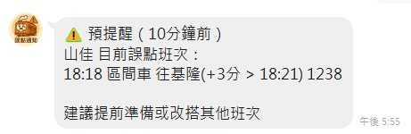
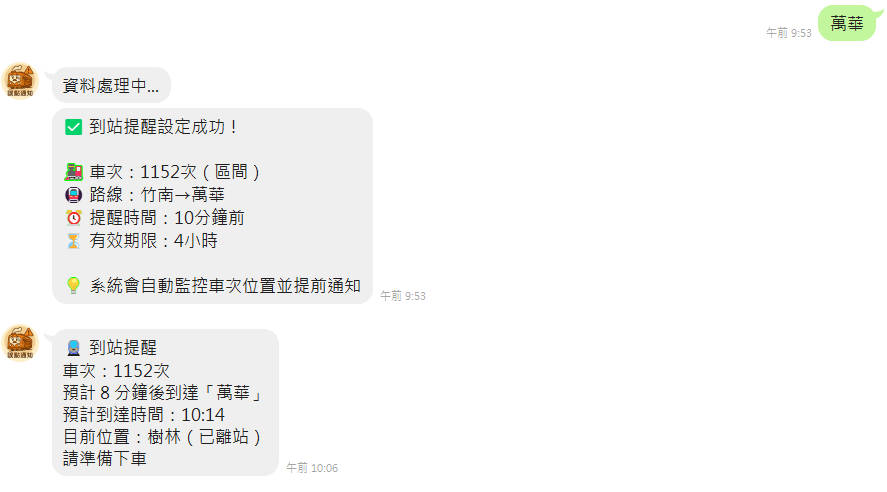
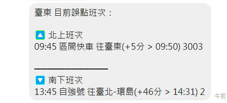

受夠了台鐵誤點的崩潰？使用台鐵官方 API 資料，讓 LINE Bot 幫你即時推播準確班次動態，輕鬆安排通勤時間！
立即加入 Bot直接串接交通部台灣鐵路管理局官方資料 API，確保資訊來源權威可靠
每次檢查都直接查詢台鐵官方 API，確保取得最新即時資料，資訊延遲最小化
資料直接來自台鐵官方系統，與官方發布的誤點資訊保持一致，準確性值得信賴
記憶常用車次，一鍵快速設定，個人化智能通勤助手。
提供火車延誤歷史統計，幫您更好地規劃通勤時間。
5分鐘檢查頻率，快速響應誤點變化，不錯過任何更新。
卡片式設計，引導式設定，帶來更友善的使用體驗。
預提醒、歷史統計等專業功能，提升通勤效率。
三卡片幫助介面重構，智能錯誤處理與驗證，操作更直覺友善。
提前通知可能的誤點情況，讓您有更多時間調整行程
深度分析您常搭車次的延誤模式，提供數據驅動的通勤建議
享受更快的資料更新頻率，第一時間掌握最新動態
專屬卡片式介面設計，引導式設定流程，智能錯誤處理與驗證
🎨 全新卡片式介面設計 - 現代化操作體驗
🔔 智能預提醒通知 - 付費用戶專屬功能
📍 到站提醒功能 - 完整行程管理
⚠️ 即時誤點資訊 - 準確掌握班次動態
直接串接官方系統，確保資料來源權威可靠
優化資料處理，確保快速響應
安全可靠的訂閱管理系統
直覺操作，卡片式設計體驗
深度統計分析，提供智能建議
🎨 新版引導式設定：
現在提供更友善的卡片式引導介面，只需跟著步驟操作即可完成設定，無需記憶複雜格式！
📝 傳統格式設定：
仍可使用傳統格式輸入，例如：
星期數字對應：0=週日, 1=週一, 2=週二, 3=週三, 4=週四, 5=週五, 6=週六
刪除提醒請輸入「刪除+設定編號」，例如「刪除1」。
輸入「查詢」即可查看會員等級與使用組別。
或直接輸入車站名稱查詢該站誤點資訊。
我們提供基礎免費版本和付費進階版本：
付費功能旨在提供更完整的通勤助手體驗，免費用戶仍可正常使用基本功能。
可透過以下方式升級：
根據會員等級提供不同的預提醒門檻：
歷史統計功能為付費會員專屬，可查看火車延誤的歷史數據分析，具體保存期限依資料庫容量而定，一般可查看數個月的歷史記錄。
系統會記錄您常用的車次和路線，在設定頁面優先顯示您經常搭乘的班次，讓重複設定更加便利。根據您的使用歷史，最多顯示 3 個常用車次供快速選擇。
到站提醒設定方式：
可能的原因：
系統每 5 分鐘檢查一次所有活躍的到站提醒，確保即時性與準確性。這個頻率在準確性和 API 使用效率間取得最佳平衡。
支援台鐵全線車站，包括：
依會員等級有不同的額度限制：
當您設定到站提醒時，系統會自動在選單頂部顯示您的常用車次。這些推薦基於您的歷史使用記錄，讓重複設定更加快速便利。
依會員等級有不同的通知門檻：
新的卡片式介面已自動啟用，無需手動切換。當您使用功能時會自動顯示現代化的卡片設計，提供更好的視覺體驗和操作便利性。
非常可靠！我們直接使用台鐵官方 API 作為唯一資料來源：
您可以信賴我們提供的誤點資訊，因為這就是台鐵官方的第一手資料。
輸入「說明」即可看到重新設計的三卡片幫助介面，分別介紹基本功能、進階功能和會員方案。